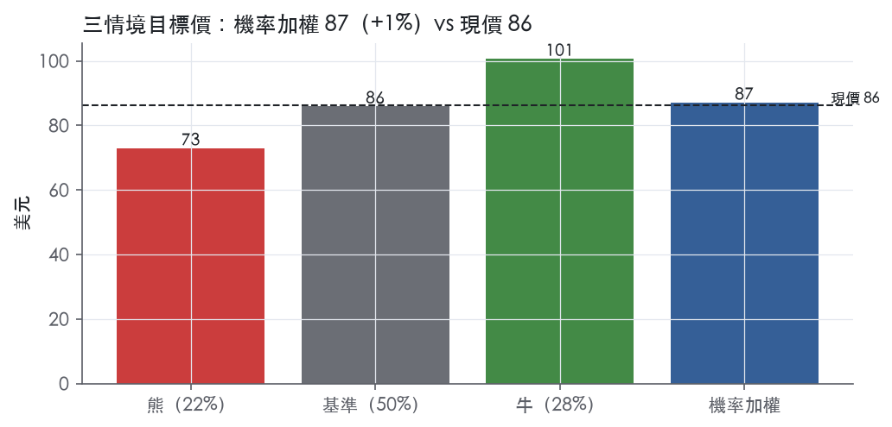
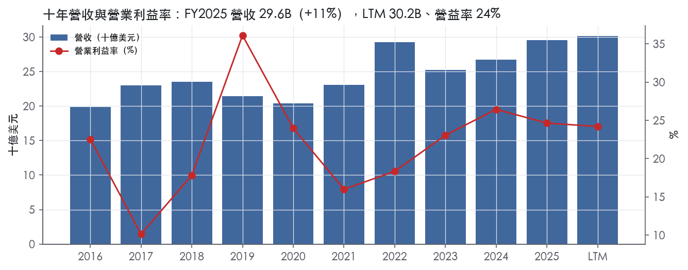
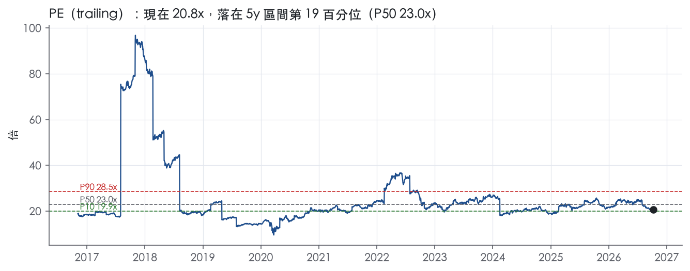
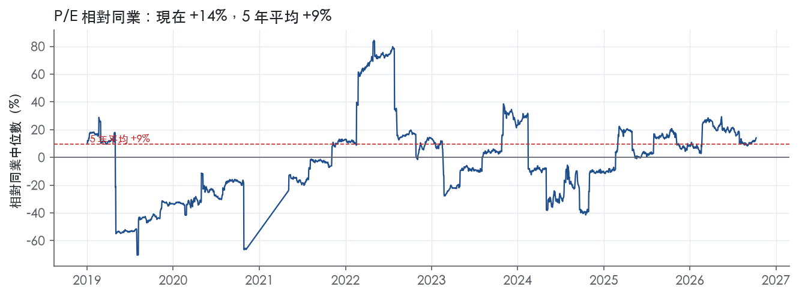
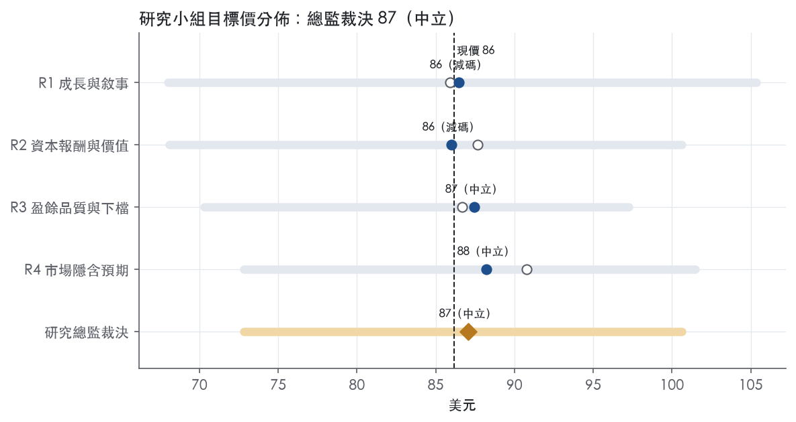
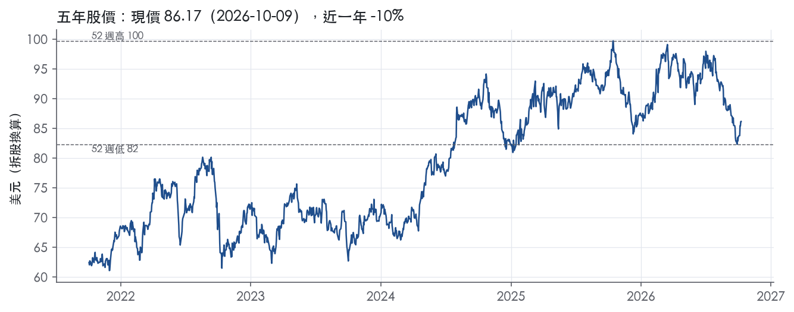

評等總表 › 公用事業 › SO
成長真實但已定價，相對同業減碼｜評等 中立｜目標價 87
| 報告日 | 評等 | 目標價 | 當時股價 | 超額報酬 |
|---|---|---|---|---|
| 2026-10-09 | 中立 | 87.04 | 86.17 | -4.7% |
| 評等 | 中立（邊界，鄰近減碼） |
| 12 個月目標價 | 87 美元 |
| 現價 | 86.17 美元（2026-10-09） |
| 預期報酬 | 股價 +1.0%＋股息 3.5%＝總報酬 +4.5%；同業籃門檻 9.2%，超額 -4.7% |
| 估值方法 | P/E 19.5x，套在第 5–8 季的EPS（也就是一年後的未來四季） |
| 三情境 | 熊 73／基準 86／牛 101 |
| 研究流程 | 四位研究員兩輪辯論＋研究總監裁決 |
| 資料來源 | SEC EDGAR XBRL、Tiingo、FRED（全免費） |
成長真實但已定價，相對同業減碼（研究總監裁決，四位研究員兩輪辯論後）
評等 中立（邊界，鄰近減碼）｜12 個月目標價 87 美元（總監三情境機率加權 87 與研究員中位數 87 各半）｜現價 86.17（2026-10-09）
預期報酬：股價 +1.0%＋股息 3.5%＝總報酬 +4.5%。同業籃門檻 9.2%，超額 -4.7%，離減碼的分界不到三個百分點，屬邊界評等（落在其他級距的機率約五成）。
估值方法：P/E 19.5x，套在第 5–8 季的EPS（也就是一年後的未來四季）。三情境：熊 73（22%）／基準 86（50%）／牛 101（28%）。
立場看空而評等中立：評等看的是「預期總報酬 4.5% − 同業籃門檻 9.2%」＝超額 -4.7%，不是絕對漲跌；看空但超額不夠負，代表下檔有限或同業報酬也低。
什麼會讓研究總監改變看法：2027 年 2 月年報若顯示 FY2026 利息保障回到 2.40x 以上且 2027 年融資計畫不含新增股權，倍數上調至前瞻帶 P50 20.4x、立場轉中性；若 Georgia PSC 對新建成本回收出現 Yates 式限制或任一評等機構降評，改採 R3 熊情境並上調熊機率。
| 過去四季（實際，FY2026Q2） | 未來四季 | 第 5–8 季 | 第 9–12 季 | |
|---|---|---|---|---|
| 營收（B） | 30.2B | 31.7B | 33.9B | 35.9B |
| 營收成長 | 6.4% | 5.0% | 7.0% | 6.0% |
| 營業利益率 | 24.2% | 29.0% | 28.5% | 28.0% |
| EPS（美元） | 4.15 | 4.20 | 4.40 | 4.54 |
| EPS 成長 | 7.0% | 1.4% | 4.8% | 3.1% |
| 每股股息（美元） | 2.98 | 2.98 | 2.98 | 2.98 |
| P/E（現價） | 20.8x | 20.5x | 19.6x | 19.0x |
| 股息殖利率（現價） | 3.5% | 3.5% | 3.5% | 3.5% |
過去四季為申報數字；預測為研究總監的假設、程式計算。倍數與殖利率都用現價計算，用來看現價對應各期獲利的高低。
| 情境 | 機率（歷史） | 故事 | 未來四季營收成長 | 第 5–8 季營益率 | 倍數 | 目標價 | 股價漲跌 |
|---|---|---|---|---|---|---|---|
| 熊 | 22%（23%） | 對應風險表第 3 條：新建成本回收比照 Plant Yates 被限制，疊加第 4 條增資加碼，倍數向同業中位數 18.2x 看齊 | 5.0% | 28.0% | 18.0x | 73 | -15.5% |
| 基準 | 50%（48%） | 每股中個位數成長被利息與 3% 稀釋吃掉一部分，倍數小幅低於市場持平 | 5.0% | 28.5% | 19.5x | 86 | -0.3% |
| 牛 | 28%（29%） | 大負載提前通電、PSC 全額核准新建成本回收，倍數回到前瞻帶 P50–P75 | 6.5% | 29.0% | 21.5x | 101 | 16.8% |
目標價由程式依研究總監的驅動與倍數計算；機率由研究總監給定。括號內是歷史頻率：把這檔股票過去十年 12 個月報酬的波動形狀，置中在基準情境，結果落在各情境附近的比例。

四位研究員用不同方法各自估值，回應研究總監的質疑後交出第二輪，最後由總監逐點裁決。各研究員的主張見第七章，裁決理由見第八章，完整論證見《研究底稿》。
| 立場（一輪→二輪） | 加權目標價（一輪→二輪） | 評等（一輪→二輪） | 第二輪倍數 | 熊～牛目標價 | |
|---|---|---|---|---|---|
| R1 成長與敘事 | 中性→看空 | 86→86 | 減碼→減碼 | 19.0x | 68～105 |
| R2 資本報酬與價值 | 看空→中性 | 88→86 | 中立→減碼 | 19.5x | 68～101 |
| R3 盈餘品質與下檔 | 中性→看空 | 87→87 | 減碼→中立 | 19.5x | 70～97 |
| R4 市場隱含預期 | 中性→中性 | 91→88 | 中立→中立 | 19.5x | 73～101 |
| 研究總監裁決 | 看空 | 87 | 中立 | 19.5x | 73～101 |
目標價由程式依各自的驅動與倍數計算；評等＝機率加權總報酬 − 同業籃門檻。
Southern Company 是一家控股公司，旗下擁有三家傳統垂直整合電力公司（Alabama Power、Georgia Power、Mississippi Power）、Southern Power，以及 Southern Company Gas¹。傳統電力子公司在美國東南部三州對零售客戶提供電力服務，並對東南部批發客戶供電¹。Southern Power 從事發電資產（含儲能電池專案）的開發、建造、收購、擁有、營運與管理，並以市場價格在批發市場銷售電力¹。Southern Company Gas 的主要業務是在伊利諾、喬治亞、維吉尼亞、田納西四州透過天然氣配送公用事業公司配送天然氣¹。公司自我定位為「一家領先的能源供應商，透過其家族企業服務東南部及以外地區 900 萬客戶」²。整體而言，Southern Company 是美國東南部地理壟斷型的受監管電力與天然氣公用事業集團，獲利主要來自各州公用事業委員會核定的費率結構，而非競爭性市場。
公司核心是三個報告分部：傳統電力營運公司、Southern Power、Southern Company Gas¹。傳統電力公司以零售電力服務為主，在約 400 個城鎮（Alabama Power）、530 個以上城鎮（Georgia Power）、123 個社區（Mississippi Power）供電，並對農村配電合作社及市政系統批發供電¹。截至 2025 年 12 月 31 日，三家傳統電力公司合計服務約 459 萬個零售客戶，其中住宅客戶約 398.6 萬戶、商業客戶約 57.6 萬戶、工業客戶約 1.7 萬戶¹。Southern Power 截至 2025 年底的發電機隊名牌容量合計 12,648 MW（含其子公司擁有的 5,268 MW）¹，主要透過長期固定價格容量型購電合約（PPA）及可再生能源 PPA 銷售電力給投資人持有電力公司、獨立發電商、市政機構、電力合作社及工商業客戶¹；其投資覆蓋率（investment coverage ratio）在 2025 年底為 2030 年前 97%、2035 年前 89%，平均剩餘合約年期約 12 年¹。Southern Company Gas 旗下最大業務為天然氣配送，營運約 77,900 英里天然氣管線及 14 座儲存設施（總容量 157 Bcf），服務約 440 萬客戶（Nicor Gas 229.4 萬戶、Atlanta Gas Light 173.3 萬戶、Virginia Natural Gas 31.6 萬戶、Chattanooga Gas 7.3 萬戶）¹；另有天然氣管線投資業務（含 SNG 50% 權益及 Dalton Pipeline 50% 合資權益）與天然氣行銷業務（SouthStar，服務約 67.7 萬商品氣客戶）¹。各分部營收占比與毛利率 10-K 未揭露，僅在 Note 16 分部附註有細節，本章未摘錄。公司並持有 Southern Linc（無線通訊）、Southern Holdings、Southern Nuclear（核電廠運維）、PowerSecure（微電網與分散式能源）等子公司¹。2026 年系統建設計畫總額達 15.9B 美元，其中 Georgia Power 10.1B、Alabama Power 2.0B、Mississippi Power 0.4B、Southern Power 0.9B、Southern Company Gas 2.2B¹。
核心地理市場集中在美國東南部，傳統電力服務區域涵蓋約 116,000 平方英里、人口約 1,700 萬¹。Georgia Power 自 2023 年起已與新資料中心及其他大用戶簽約，涵蓋約 9 GW 電力負載，每份合約個別最大年用電負載均超過 100 MW，服務預計於 2028 年前陸續啟動¹。喬治亞州公用事業委員會透過 2022 IRP 與 2023 IRP Update 已核定約 13 GW 資源，其中約 9 GW 為 Georgia Power 新建發電與儲能設施，核定成本合計 19.5B 美元，預計 2030 年前陸續完工¹。Mississippi Power 來自農村電力合作社與一個市政批發客戶的長期合約，占該公司 2025 年總營業收入 12.9%¹。Southern Company Gas 在各州為受監管的獨占特許經營區，不與其他天然氣配送商直接競爭，但面對電力公用事業、燃油與丙烷供應商的能源替代競爭¹。公司自述服務「東南部及以外地區 900 萬客戶」，員工約 29,800 人²¹。整體客戶結構以受監管住宅／商業用電與用氣為主體，資料中心與大型負載客戶是近兩年新增成長來源。
FY2025Q3：營收 7.82B（dv，年增 7.5%），淨利 1.71B，EPS 1.54（is/dv，FY2025Q3）。FY2025Q4：營收 6.98B，年增 10.1%，但受季節性與加速折舊等非經常性項目影響，淨利降至 0.42B、EPS 0.38（dv，FY2025Q4）。FY2026Q1：公司按 GAAP 報告淨利 1.4B 美元、每股 1.21 美元，與 2025 年同期 1.3B 美元、每股 1.21 美元相當³；排除重整項目後，淨利 1.5B 美元、每股 1.32 美元，優於去年同期 1.4B 美元、每股 1.23 美元³；第一季營收 8.4B 美元，較 2025 年同期 7.8B 美元成長 8.0%³，調整後獲利動能來自較高的公用事業營收，但部分被受監管電力公司氣候較溫和及較高利息費用抵銷³。FY2026Q2：公司報告淨利 1.2B 美元、每股 1.03 美元，高於 2025 年同期 0.9B 美元、每股 0.80 美元²；排除項目後，淨利 1.3B 美元、每股 1.13 美元，優於去年同期 1.0B 美元、每股 0.92 美元²；第二季營收 6.98B 美元，較去年同期 6.97B 美元僅增 0.1%²；上半年累計營收 15.4B 美元，較去年同期 14.7B 美元成長 4.2%²；驅動因素為受監管公用事業投資、客戶用量與成長、權益法投資收益增加及所得稅降低，部分被較高利息費用抵銷²。LTM（至 FY2026Q2）營收 30.18B、EBITDA 13.65B、GAAP 稀釋 EPS 4.15、FCF 為 -3.27B。兩份新聞稿均未附下一季具體財測數字，僅重申長期投資與成長計畫方向。
公司執行長 Chris Womack 表示：「Southern Company 的強勁表現反映我們以客戶為中心的服務成長方式」，並指出「東南部各地的非凡經濟發展動能與電力需求持續為我們有幸服務的客戶與社區創造有意義的機會」²。管理層強調「我們負責任地投資並為長期規劃，以服務新舊客戶，同時將可靠度與費率穩定置於工作核心」²。第一季財報中 Womack 指出公司「正在兌現以對現有客戶既有利又具保護性的方式服務成長的計畫」，並稱因規模、技能與專業優勢「能聚焦於將客戶與社區放在第一位」³。10-K 指出傳統電力公司預期資料中心與其他大用戶將帶動電力銷售需求顯著成長，並正投資發電、輸電與配電系統以滿足此需求，同時設計對新客戶的定價以使增量成本能被增量收入涵蓋¹；Southern Power 持續透過開發、建造或收購發電設施與其他能源專案，以及替換到期 PPA 來執行成長策略¹；Southern Company Gas 的 SNG 管線正在推進一項預計 2029 年完工、可增加約 1.3 Bcf/日輸送能力的擴建專案，以滿足客戶需求¹。公司成長引擎本質上是受監管資本支出循環（尤其是資料中心用電與 Georgia Power 大規模新建機組）疊加 Southern Power 可再生能源與儲能資產擴張，獲利能見度高但資本密集度也同步上升，FCF 持續為負反映出此一投資周期尚未進入收割階段。公司高資本支出搭配淨負債攀升（dv 顯示淨負債自 FY2024 的 63.75B 增至 FY2025 的 70.95B），是觀察未來評等與股息政策風險的關鍵變數。

Southern Company 評為窄護城河、趨勢穩定。護城河的來源是州法與聯邦執照賦予的地理獨占，以及效率規模，因此競爭者進不來。但費率由監理機關核定，超額報酬的上限被監理壓住，所以撐不到寬護城河。這個評級和量化底稿有正面衝突，下文照實列出，估值研究員應把它當成「有條件的窄」來使用。
無形資產（特許與執照）是第一來源。喬治亞州的零售供電權受《Territorial Electric Service Act of 1973》規範，「the Georgia PSC has assigned substantially all of the land area in the state to a supplier」¹。密西西比州依《1956 Utility Act》核發「Grandfather Certificates」，其他業者要延伸設施進入該區域，必須先取得 Mississippi PSC 核發的 CPCN¹。天然氣配送公司「do not compete with other distributors of natural gas in their exclusive franchise territories」¹。核電執照方面，Vogtle Units 1–4 的 NRC 執照分別在 2047、2049、2062、2063 年到期¹。
效率規模是第二來源。電力子公司垂直整合，擁有發電、輸電、配電設施¹。服務區面積約 116,000 平方英里¹。系統內資產以 power pool 方式「centralized economic dispatch」統一調度¹。重複建置一套電網在經濟上不合理，這是自然獨占的典型結構。
轉換成本是第三來源，但屬次要。天然氣用戶的競爭只發生在設備初裝階段，「Customers generally use the chosen energy source for the life of the equipment」¹。自 2023 年起，公司與資料中心等大用戶簽下的合約涵蓋約 nine GWs 負載¹。這些合約含「minimum duration, minimum bill provisions… termination payment requirements, and financial security」等條款¹。Southern Power 的投資覆蓋率在 2030 年前為 97%，平均剩餘合約年期約 12 年¹。
成本優勢與網路效應在原文中找不到相對同業的證據，因此不列入。
數字只證明了報酬的「穩定」，沒有證明報酬的「超額」，而且以資料包的口徑，超額報酬是不成立的。
我仍維持「窄」，理由有兩點：
但這兩點都是判斷，資料包裡沒有能直接佐證的數字。如果研究部堅持採用 10.2% 這個代理值，依評級定義應下修為「無」。
最大的侵蝕來源不是競爭者，而是資本密集度和監理延遲把報酬壓在資本成本以下。
目標倍數應與受監管公用事業同業持平，不給溢價。特許獨占保證報酬存在、波動小，但量化底稿顯示 ROIC 從未高於資本成本代理值，撐不起成長型溢價。目前 EV/EBITDA 為 12.5x，低於 5 年中位數 13.5x，落在 5 年 5.9% 分位（.現在分位）。對此較合理的解讀是均值回歸的空間，而不是護城河本身的折價。
| 指標 | 最新 | 十年平均 | 標準差 | 最低 | 最高 |
|---|---|---|---|---|---|
| ROIC | 6.0% | 5.4% | 1.3% | 2.8% | 7.9% |
| 營業利益率 | 24.7% | 21.9% | 6.6% | 10.1% | 36.1% |
| FCF 利潤率 | -9.9% | -5.8% | 3.9% | -12.1% | 3.1% |
| ROE | 12.5% | 11.3% | 3.7% | 3.8% | 18.2% |
程式計算。資本成本代理值（10 年債＋5%）：10.2%；ROIC 平均減資本成本：-4.8%；ROIC 有資料的 9 年中，高於資本成本 0 年。
Southern Company 的淨利有現金支撐，營業現金流／淨利 LTM 2.29x、近三年 2.13x、十年平均 2.61x，均在綠燈區。但自由現金流／淨利 LTM -0.70x、近三年 -0.29x、十年平均 -0.51x 全部為紅燈，且 FCF 已連續多年為負（FY2016 至 FY2025 僅 FY2024 單年轉正 0.83B）。這個紅旗主要是公用事業資本支出循環造成，不是盈餘品質造假，但淨負債／EBITDA 5.32x 與利息保障倍數 2.27x 兩個紅燈疊加，代表公司是靠舉債在撐資本支出與股利，財務彈性有限，因此評級落在中，不給高分。
應計比率 LTM -3.8%、近三年 -3.3%、十年平均 -3.1%，全部為負值且在綠燈門檻（≤0%）之內，代表淨利相對總資產是「現金領先、應計落後」，盈餘沒有被應收帳款或存貨墊高的風險。CFO／淨利同樣全程 > 1x，LTM 2.29x 顯示每一塊錢淨利背後有超過兩塊錢的營業現金流進帳，這是公用事業監管資產的典型現金特質，電費收現穩定、盈餘認列與現金收取時間差不大。但這個現金優勢被龐大的維護性與擴張性資本支出吃光：FY2025 資本支出／營收達 43.1%，是十年最高（資料包年度表），FCF 轉為 -2.94B，LTM FCF 更滑到 -3.27B。換言之，「賺的錢是真金」，但這些真金全部再投入電網與發電資產，股東拿到的自由現金流是負的，這點對估值很關鍵，不能把 GAAP 淨利當作可自由支配的現金流。
2026 年第二季 GAAP 淨利 1,174M，調整後（Excluding Items）淨利 1,289M，差距 115M²。主要調整項目是「Repowering 加速折舊」淨額 -111M（折舊 -143M，稅盾 +32M）²，YTD 六個月更達 -230M（折舊 -296M，稅盾 +66M）²。其餘項目金額小：Nicor Gas 資本投資估計損失淨額 -6M²、處置影響淨額 +6M；去年同期還有一次性的債務清償損失 -129M（稅盾 +32M）及在建工程估計損失²。我認為「Repowering 加速折舊」不應該被完全排除，這是資產提前報廢／加速攤提的真實經濟成本，只是時間點提前，排除掉等於把成本從未來挪到現在卻假裝不存在；相對地，債務清償損失屬於一次性融資決策，排除合理。整體而言，調整後 EPS（1.13）比 GAAP EPS（1.03）高出約一成，估值研究員應該用 GAAP 數字為主，對公司自己的非 GAAP 加回打折看待。
槓桿持續走高且無回頭跡象：淨負債從 FY2016 的 45.48B 一路爬升到 FY2025 的 70.95B，最新一期（FY2026Q2）更到淨負債 72.60B。稀釋股數也在穩定成長，LTM 年變動 1.2%、十年平均 1.6%，公司持續用股權增資而非回購來補資本支出缺口，從 FY2016 的 0.96B 股到 FY2025 的 1.11B 股即可印證，稀釋股數變動燈號為黃燈，代表股東的每股盈餘含金量正被慢慢稀釋，但速度不算失控。股東回饋面，（股利＋回購）／淨利 LTM 66.6%、近三年 71.0%、十年平均 99.6%，十年平均逼近 100% 說明公司幾乎把賺到的每一塊錢都發回股東，但這筆錢的來源不是自由現金流而是舉債與股權增資的混合，屬於典型公用事業「規模擴張靠發債、股利靠淨利」的資本結構，不算隱藏風險但確實限制了財務餘裕。
自由現金流／淨利紅燈（LTM -0.70x，近三年 -0.29x）：這是真問題但屬於產業結構性現象，不是盈餘品質造假——公司正處於因應資料中心用電需求成長的大規模機組與電網投資週期，新聞稿明確提到「extraordinary economic development momentum and demand for power」與對應的大規模發電/輸電投資²，FY2025 資本支出／營收跳到 43.1%（資料包年度表）即是證據。這個紅旗短期內不會消失，應視為持續性，不是一次性。
淨負債／EBITDA 紅燈（LTM 5.32x，近三年 5.39x）：真問題，槓桿長期偏高且無下降趨勢，從十年平均 5.88x 到近三年 5.39x 略降但仍遠高於 1.5x 的綠燈標準。這是公用事業監管資產可承受的槓桿區間（有費率基礎與穩定現金流作擔保），但相對同業仍屬偏高，限制融資彈性。
利息保障倍數紅燈（LTM 2.27x，近三年 2.40x）：真問題，遠低於 8x 綠燈門檻，且利率環境墊高利息負擔——10 年期公債殖利率已到 5.22%，公司新聞稿也點名「higher interest expense」拖累調整後盈餘成長²。這個紅旗與高槓桿是同一個根源，應合併看待。
稀釋股數年變動黃燈（LTM 1.2%）：可解釋，屬於融資資本支出的股權增資稀釋，幅度溫和（十年平均 1.6%），非管理層濫發股票計畫的訊號。
淨利率 FY2018→FY2019 跳動 +12 個百分點：未解決的紅旗。本次資料包沒有取得 10-K Item 7 原文，無法從 MD&A 查證該年度是否有一次性稅務或資產處分項目，這是分析的缺口，不能排除是監管資產重估或稅改遞延稅影響。建議估值研究員在使用 FY2019 作為歷史基準盈餘時，對該年度淨利做保守處理或排除在外，直到取得 MD&A 佐證。
SBC／營收無燈號：量化底稿顯示 LTM 與近三年皆為「—」（無資料），十年平均 0.0%，公用事業本身股權薪酬佔營收比重極低，非盈餘品質風險點，可忽略。
估值應以 GAAP 盈餘為基礎、對公司自報的「Excluding Items」調整後 EPS 打折，因為最大調整項（加速折舊）是真實經濟成本而非真正一次性。高槓桿（淨負債／EBITDA 5.32x）與偏弱的利息保障（2.27x）在利率上行環境下限制了估值倍數的上緣，EV/EBITDA 目前 12.6x 已處於近五年低分位（5.9%），但這反映的是市場對槓桿與負 FCF 風險的合理定價，不是便宜訊號。FCF 持續為負應被視為資本投資週期的結構性現象，不建議用 FCF 殖利率做估值主軸，應以監管資產報酬（ROIC）與股利可持續性作為核心估值錨點。
| 項目 | LTM | 近三年 | 十年 | 燈號 | 規則 |
|---|---|---|---|---|---|
| 營業現金流／淨利 | 2.29x | 2.13x | 2.61x | 綠 | ≥1.00x 綠、<0.80x 紅 |
| 自由現金流／淨利 | -0.70x | -0.29x | -0.51x | 紅 | ≥0.90x 綠、<0.60x 紅 |
| 應計比率（(淨利−CFO)／平均總資產） | -3.8% | -3.3% | -3.1% | 綠 | ≤0.0% 綠、>5.0% 紅 |
| SBC／營收 | — | — | 0.0% | — | ≤3.0% 綠、>8.0% 紅 |
| 淨負債／EBITDA | 5.32x | 5.39x | 5.88x | 紅 | ≤1.50x 綠、>3.00x 紅 |
| 利息保障倍數（營業利益／利息） | 2.27x | 2.40x | 2.61x | 紅 | ≥8.00x 綠、<3.00x 紅 |
| 稀釋股數年變動 | 1.2% | 0.9% | 1.6% | 黃 | ≤0.0% 綠、>3.0% 紅 |
| （股利＋回購）／淨利 | 66.6% | 71.0% | 99.6% | 綠 | ≥50.0% 綠、<0.0% 紅 |
程式計算；燈號以 LTM（無則近三年平均）判定。
| 風險 | 觸發指標（看什麼數字、在哪裡看） | 對 EPS 的影響方向與粗略幅度 | 未來 12 個月發生機率 | 出處 |
|---|---|---|---|---|
| 1. 資料中心/大負載合約不如預期兌現，新建產能閒置 | 已簽約 9 GW 大負載合約的實際用電啟動進度（公告、10-Q 揭露）；Georgia Power 19.5B 美元核定建設項目的 COD 延遲公告 | 負向，中～大：建設成本若無法被增量營收覆蓋，將侵蝕受監管 ROE | 中 | ⁴ |
| 2. 建設成本/時程超支（新發電、輸電、儲能專案） | 10-K/10-Q 揭露的在建工程（CWIP）變動、個別專案公告延遲或超支金額 | 負向，中：歷史資本支出/營收比已從 FY2022 的 27.1% 升至 FY2025 的 43.1%（資料包），超支將推升淨負債 | 中 | ⁴；資本支出比率見資料包 |
| 3. 費率案／IRP 核定不如預期，成本回收被打折 | 各州 PSC（Alabama、Georgia、Mississippi）費率案裁定、ROE 與股權比率核定結果公告 | 負向，中～大：核定成本僅能透過費率回收，裁定不利直接打到淨利【判方向，抄依據】 | 中 | 10-K 年報 FY2025 Item 1A（風險因素） |
| 4. 融資成本上升與信評壓力（淨負債持續攀升） | 淨負債（dv.net_debt）年度變化、S&P/Moody's/Fitch 評等動作公告、公司發債利率 | 負向，中：淨負債已由 FY2024 的 63.75B 增至 FY2025 的 70.95B（資料包），LTM FCF 為 -3.27B（資料包），利息費用上升已在 FY2026Q1/Q2 財報中被提及為獲利逆風³² | 高 | ³²；淨負債數字見資料包 |
| 5. 核能/燃料與環境法規合規成本（CCR、延役審批） | NRC 對 Plant Hatch 延役申請的核決時點（預計 2026Q2 末）；CCR Rule 相關 ARO 年度估計支出 | 負向，小～中：2026 年 CCR 關閉監測估計支出 653M 美元⁴ | 低 | 10-K 年報 FY2025 Item 1A（風險因素） |
風險一：大負載需求兌現風險最被低估，卻是本波資本支出循環的核心假設。 公司在 10-K 中明確說明，傳統電力公司預期資料中心與其他大用戶帶動電力銷售顯著成長，且必須投資發電、輸電、配電系統以滿足此需求，同時將對新客戶的定價設計成讓增量成本被增量收入覆蓋⁴。自 2023 年起已簽約約 9 GW 電力負載，服務預計 2028 年前陸續啟動⁴（原文見業務概況章引用）。但合約是否按時「爬坡」存在不確定性，若客戶延遲用電或毀約，公司已建好的產能將變成沉沒成本，直接壓縮 ROE。這是五條風險中影響最大、且已有可觀測合約清單可追蹤的一條。
風險二：建設超支是公司自己列為第一類不確定因素的項目，且規模巨大。 Georgia Power 核定的新建項目成本合計 19.5B 美元，預計 2030 年前陸續完工⁴，2026 年系統建設計畫總額 15.9B 美元⁴。10-K 前瞻聲明逐條列舉了可能導致成本超支的因素：人力成本變化、承包商表現、天氣、設備短缺、通膨與關稅、司法或監管延遲等⁴。資本支出/營收比已從 FY2022 的 27.1% 一路攀升到 FY2025 的 43.1%（資料包），顯示投資強度持續上升，任何超支都會直接體現在現金流與負債上。
風險三：費率監管結果是盈餘的生殺開關。 公司獲利結構高度依賴各州 PSC 對費率計畫、IRP、ROE 與股權比率的核定結果⁴；原文前瞻聲明直接點名「state and federal rate regulations and the impact of pending and future rate cases and negotiations, including rate actions relating to ROE, equity ratios…」為影響實際結果的因素之一⁴。Georgia Power 2023 IRP Update 已有先例：Plant Yates Units 8、9、10 的部分成本回收被限制⁴，顯示監管機構確實會打折核定成本，不是純粹橡皮圖章。
風險四：淨負債攀升疊加高利率環境，是目前財報已經在發生的逆風，不是假設性風險。 FY2026Q1 財報明確點名「較高利息費用」部分抵銷了調整後獲利成長³，FY2026Q2 財報同樣提到「higher interest expense」是抵銷因素之一²。資料包顯示淨負債從 FY2024 的 63.75B 增至 FY2025 的 70.95B，LTM FCF 為 -3.27B，意味公司仍需持續外部融資支撐資本支出，一旦信用利差（資料包 ig_oas 0.82、hy_oas 3.15）走闊或評等被下調，融資成本會進一步侵蝕 EPS。這條機率定為「高」，因為它已經在最近兩季財報中反覆出現，不是未來才會發生。
風險五：核電延役與環境合規成本可監測但影響較小。 Southern Nuclear 已於 2025 年 5 月 15 日向 NRC 提交 Plant Hatch Units 1、2 的延役申請，NRC 決定預計於 2026 年第二季末公布⁴。若延役不順，長期資產基礎與折舊假設需要重估，但時間拉得較長、短期 EPS 影響有限，故列為機率「低」的第五條。
現價 86.17 對應 trailing（過去四季）P/E 20.8x、EV/EBITDA 12.6x、EV/EBITA 23.4x、EV/Sales 5.7x、FCF 殖利率 -3.3%。主要估值倍數 P/E 現在 20.8x，落在5 年區間第 19 百分位（P10／P50／P90 = 19.9x／23.0x／28.5x）。

把程式的機械基準預測放到現價下，市場付的前瞻倍數是：P/E（未來四季） 26.9x、P/E（第 5–8 季） 25.1x。反推 DCF 顯示市價隱含未來五年營收年成長 150.0%（WACC 9.0%、終值成長 3.0%、FCF 利潤率 -4.9%，SBC 不加回）。
| 倍數 | 現在 | 5 年 P10 | 5 年 P50 | 5 年 P90 | 現在分位 | 全期 P50 |
|---|---|---|---|---|---|---|
| P/E | 20.8x | 19.9x | 23.0x | 28.5x | 19.0% | 21.5x |
| EV/EBITDA | 12.5x | 12.7x | 13.5x | 16.1x | 5.9% | 13.2x |
| EV/EBITA | 23.3x | 22.4x | 24.3x | 30.6x | 28.5% | 23.3x |
| EV/EBIT | 23.4x | 22.5x | 24.4x | 30.9x | 28.0% | 23.5x |
| EV/Sales | 5.7x | 4.6x | 5.6x | 6.1x | 51.6% | 5.2x |
| P/S | 3.3x | 2.7x | 3.3x | 3.7x | 46.4% | 3.0x |
| P/FCF | 998.7x | — | — | — | — | 137.6x |
trailing 倍數（股價 ÷ 過去四季）；分位以每個交易日計算。
同業籃：CEG, AEP, EIX, D, CNP, AQN（SIC 4911 同業 24 家中，CY2025 營收最接近的 6 家）。評等門檻 9.2%：同業「倍數不變下持有一年」的隱含報酬中位數（＝ FCF 殖利率 ×(1＋g)＋g，g 為 5 年營收年複合成長並夾在 −2%～8%），每家夾在 0～15%、P/E 低於 5 倍視為資料可疑而排除，中位數再限制在 10 年債到 10 年債＋5% 之間；排除：AQN（隱含報酬算不出來）。
| 代號 | 市值 | 5 年營收 CAGR | 營益率 | ROIC | P/E | 5 年 P/E 中位數 | EV/EBITDA | P/FCF | 隱含報酬 |
|---|---|---|---|---|---|---|---|---|---|
| SO | 99.1B | 7.7% | 24.2% | 6.0% | 20.8x | 23.0x | 12.6x | — | 12.9% |
| CEG | 105.8B | 7.7% | 14.7% | 10.6% | 29.1x | — | 15.7x | 342.4x | 8.0% |
| AEP | 67.2B | 8.0% | 24.0% | 6.8% | 18.0x | 18.4x | — | 25.9x | 12.1% |
| EIX | 21.3B | 7.3% | 30.8% | 10.1% | 6.0x | 26.5x | 6.7x | — | 25.2% |
| D | 54.2B | 3.1% | 26.3% | 5.2% | 18.2x | 21.3x | 15.0x | — | 8.7% |
| CNP | 25.3B | 4.8% | 22.5% | 5.4% | 23.6x | 21.5x | 12.5x | — | 9.2% |
| AQN | — | 7.7% | — | 2.9% | — | — | — | — | — |
| 同業中位數 | 7.5% | 24.0% | 6.1% | 18.2x | 21.4x | 13.8x | 184.2x | 9.2% |
全部 trailing，程式以各公司 SEC XBRL 與 Tiingo 行情計算；第一列為本檔。
P/E 相對同業中位數：現在 14.0%，過去 1 年平均 15.1%、3 年 4.1%、5 年 9.4%；EV/EBITDA 相對同業中位數：現在 -9.4%，過去 1 年平均 -7.2%、3 年 -0.5%、5 年 4.8%。

事後實現前瞻倍數帶（P/E，2018-08-17..2025-08-15）：P10／P50／P90 = 15.5x／20.4x／27.3x。它是每個交易日的股價除以之後四季實際實現的指標；一年後，今天的第 5–8 季正是那時的未來四季，所以這條帶是 12 個月目標價的同口徑倍數。因為用的是事後實際而非當時預期，過去成長超乎預期的公司這條帶會偏低。
程式的機械基準（成長率從過去四季年增率三年收斂到 6%、利潤率持平）用 事後實現前瞻 P/E P50 估值得到 70（-18.6%），市場現行前瞻倍數（現價 ÷ 基準 未來四季指標）一年後持平，套在基準 第 5–8 季指標得到 92。這兩個數字只是參考點，不是本報告的目標價；研究員對這個定價的回應在第七章。
下表是每位研究員第一輪（各自獨立）與第二輪（回應研究總監的質疑後）的結果。目標價全由程式依各自的假設計算。
| 立場（一輪→二輪） | 加權目標價（一輪→二輪） | 評等（一輪→二輪） | 第二輪倍數 | 熊～牛目標價 | |
|---|---|---|---|---|---|
| R1 成長與敘事 | 中性→看空 | 86→86 | 減碼→減碼 | 19.0x | 68～105 |
| R2 資本報酬與價值 | 看空→中性 | 88→86 | 中立→減碼 | 19.5x | 68～101 |
| R3 盈餘品質與下檔 | 中性→看空 | 87→87 | 減碼→中立 | 19.5x | 70～97 |
| R4 市場隱含預期 | 中性→中性 | 91→88 | 中立→中立 | 19.5x | 73～101 |
| 研究總監裁決 | 看空 | 87 | 中立 | 19.5x | 73～101 |
目標價由程式依各自的驅動與倍數計算；評等＝機率加權總報酬 − 同業籃門檻。
分歧度：第一輪 加權目標價 86～91（區間＝現價的 6%）· 倍數 19.5～20x · 立場 中性×3、看空×1；第二輪 加權目標價 86～88（區間＝現價的 3%）· 倍數 19～19.5x · 立場 看空×2、中性×2。

| 研究員 | 第二輪主張 | 堅持的理由 |
|---|---|---|
| R1 成長與敘事 | 相對同業看空，P/E 19.0x；負載成長真實，但已反映在股價。 | 9 GW 合約 2028 年前啟動，第二年營收成長 7.0% 不下修。 |
| R2 資本報酬與價值 | 中性，P/E 19.5x；股價不貴，但沒有上漲空間。 | 資本支出升高沒換來更高報酬，股利靠外部資金支付。 |
| R3 盈餘品質與下檔 | 相對同業看空，P/E 19.5x；盈餘真實，但槓桿偏重。 | 加速折舊是真實成本，金額仍在放大，不能剔除。 |
| R4 市場隱含預期 | 中性，P/E 19.5x；市場低估利息對每股盈餘的侵蝕。 | 利息保障回到 2.40x 以上之前，倍數不拉到 20.4x。 |
每位研究員的逐條回應與完整論證見《研究底稿》（SO_研究底稿_2026-10-13.docx）。
| 分歧點 | R1 | R2 | R3 | R4 | 什麼資料會分出勝負 |
|---|---|---|---|---|---|
| ① NTM 營收成長 y1 | 6.0%，沿用第一輪，未重新論證 | 5.0% | 5.0%，Q2 年增僅 0.1% | 5.0% | FY2026Q3 營收（2026-11-15 前）；FY2026 全年營收是否達 31.0B（2027-02-28） |
| ② Q5–Q8 營收成長 y2 | 7.0%：9 GW 合約 2028 年前啟動、minimum bill 讓計費早於用量 | 6.5%，無獨立機制 | 6.0%，沿用基準 | 7.0% | 10-Q／法說揭露大負載實際通電 MW；Georgia PSC 2027 年費率與 IRP 裁定 |
| ③ 代理營益率路徑 | 29.0／28.5／28.0 | 同 R1，另指加速折舊 YTD 296 對 65 仍在放大 | 29.5／29.0／28.8 | 29.5／29.0／28.5：利息增速快於 EBIT、AFUDC 完工轉費率 | Q3 8-K 的利息費用與 repowering 加速折舊；FY2026 GAAP EPS 是否 ≥ 4.10 |
| ④ 目標倍數 | 19.0x：帶期利率低、溢價 14% 高於 5 年均 9.4%、保障倍數下滑 | 19.5x：保障倍數、FCF/淨利惡化、增資加速；ROE 高於權益成本故不落 P25 | 19.5x：淨負債續升、利息 2.27x、稀釋；仍高於同業 18.2x | 19.5x：帶期利率低、利息 2.27x、Yates 先例 | FY2026 利息保障倍數；2027-02 融資計畫的股權金額；P/E 相對同業溢價走向 |
| ⑤ 熊情境設計 | 17.5x、−20%，風險 3 | 17.5x、−20%，護城河章侵蝕 1 | 17.5x、−19%，風險 3+4+1、capex 52% | 18.0x、−17%，風險 3、股數 4.5% | 置中分布 ≤−20% 歷史頻率 0%；Georgia PSC 對 19.5B 新建成本回收是否出現 Yates 式限制 |
① y1 選 R3（5.0%）。 第二季營收年增 0.1%、上半年 4.2%²，下半年對比的又是 FY2025Q3 年增 7.5%、Q4 年增 10.1%（資料包八季表）的高基期。R1 保留 6.0% 但第二輪沒有重新論證，也拿不出 H2 回到 6% 以上的證據；氣候與燃料轉嫁是噪音，不是論點。三位研究員的 5.0% 與已揭露的上半年軌跡一致。
② y2 選 R1（7.0%）。 這是成長敘事與保守基準的正面對決。R1 的證據具體：9 GW 合約「2028 年前陸續啟動」且含 minimum bill 條款¹，Q5–Q8 落在窗口內，計費不必等用量爬坡。R3 沿用 6.0% 的理由只是「沒有費率基礎金額」，這是材料缺口不是反證；R2 的 6.5% 是折中。R4 同為 7.0%，與 R1 互相印證。R1 這邊的缺口也要記：費率基礎金額與核定 ROE 不在材料裡，7.0% 是代理值，由主張二檢驗。
③ 營益率路徑選 R2（29.0／28.5／28.0）。 四人都同意代理值的必要性：基準 NTM EPS 3.20 低於 LTM GAAP EPS 4.15，缺口來自模型漏掉權益法收益與 AFUDC、並把利息按 LTM 持平。分歧在起點與斜率。R3、R4 的 29.5% 起點忽略了 repowering 加速折舊仍在放大（Q2 143M 對 40M、YTD 296M 對 65M²）；我們採 GAAP 分母，這筆成本不能假設消失，R2 正是用這點校準。斜率上 R4 的機制描述最清楚——保障倍數 2.40x→2.27x（財務體質章）代表利息增速快於 EBIT；19.5B 新建 2030 年前完工後 AFUDC 轉成營收¹，不能在 y2 營收裡算第二次——R4 自己把 y3 壓到 28.5% 就承認了方向，R2 的路徑只是把這個方向走完。校正載體採 R1／R3 的 capex 50%，不採 R2 的 D&A 16.5%：前者有 2026 年建設計畫 15.9B¹對 LTM 營收 30.18B 的獨立支撐（R3 第二輪），後者會把模型 EBITDA、EBITA 一併壓低，污染交叉驗證。主尺是 EPS，這個選擇不動目標價。
④ 倍數選 R3（19.5x）。 先清理理由。R1 與 R4 的第一條「帶的期間利率較低」是全市場因素，現價與門檻都已反映，依第 7 條不算數。R1 的第二條（溢價 14% 應回落到 5 年均 9.4%）被 R4 的 E1 拆解：同業中位數從 21.4x 降到 18.2x 主要是 D 由 21.3x 降到 18.2x（5 年營收 CAGR 3.1%，籃內最低），AEP 僅 18.4x→18.0x，CNP 反而升到 23.6x，而 9.4% 是含 EIX、CEG 失真樣本算的。拿掉這兩條，R1 低於 19.5x 的額外 0.5x 沒有支撐，以 19.5x 看待。R3 的理由全是個股因素且沒有重複扣分：利息保障 2.27x 低於近三年 2.40x、淨負債／EBITDA 5.32x（財務體質章）、平均股數 1,137M 對 1,101M²的增資加速；EV/EBITDA 相對同業已折價 −9.4%（5 年均 +4.8%）而 P/E 仍溢價 14.0%，說明槓桿已在 EV 層面計價、每股層面還沒，增資持續就有收斂壓力；19.5x 仍高於受管制同業中位數 18.2x，保留品質溢價。不上到 P50 20.4x 的原因：R4 的 E2 說明 P50 淨偏誤偏低，但那是 2018–2025 的實現值，當時十年平均稀釋 1.6%（財務體質章），現在平均股數年增已明顯高於這個水準，每一輪增資都在用股東的 P/E 換資產負債表。
⑤ 熊情境選 R4（18.0x、股數 4.5%）。 三位研究員的熊情境深度 −19%～−20%，但置中分布 ≤−20% 的歷史頻率是 0%，P10 只有 −14%；劇本又註明受管制事業帶很窄。R4 的 −17%、18.0x 是唯一貼近「倍數向同業中位數 18.2x 看齊」這個可觀測錨的設計，機制掛風險表第 3 條（Yates Units 8–10 成本回收受限先例⁴），並以股數 4.5% 承載第 4 條的增資壓力。R3 的熊情境把 y1 砍到 3%、capex 52%，要三條風險同時發生，對 12 個月窗口太厚。
漂移處理：無退回。 R3 靠攏比例 78%、R4 63%，但兩人接受的意見全部附證據（R3 的機率改到程式歷史對照值；R4 的營益率下修引用轉發的保障倍數與 10-K 完工時程），加權目標價變動都在 3% 內。R3 對 Q1 的反駁成立：154／26 是 8-K 2026-04-30 Non-GAAP 表原值，與 YTD 減 Q2 的差異是兩份表之間的捨入，出處已補標。R4 把熊機率提到 24% 的證據（Yates 先例）已是熊情境本身的機制，不改變頻率，機率上我不跟進。
| 驅動 | 基準 | 裁決 | 理由 |
|---|---|---|---|
| rev_growth_y1 | 6.3% | 5.0% | 分歧① |
| rev_growth_y2 | 6.1% | 7.0% | 分歧② |
| op_margin_y1／y2／y3 | 24.2% | 29.0／28.5／28.0% | 分歧③；代理值吸收權益法收益與 AFUDC，斜率反映利息與完工轉換 |
| capex_pct_rev | 46.1% | 50.0% | 分歧③校正載體；只影響模型 FCF 與淨負債 |
其餘（y3 6.0%、D&A 21.0%、稅率 16.6%、股數年增 3.0%）照基準；y3 在 Q5–Q8 主尺之外，不另設。模型輸出的 FCF 與淨負債因代理值仍偏樂觀，不可用來做槓桿交叉驗證。反推 DCF 150% 在 FCF 為負時無經濟意義，不採。
目標倍數 19.5x GAAP EPS @ q5_q8。 錨是事後實現前瞻 P/E 帶 P25 17.5x 與 P50 20.4x 之間、偏 P50，口徑直接對應劇本主尺，不需換算。相對同業：高於受管制同業中位數 18.2x（AEP 18.0x、D 18.2x、CNP 23.6x），低於 SO 自身 5 年 trailing P50 23.0x。對市場持平的關係：基準模型列的市場隱含 25.1x／26.9x 是套在被低估的基準 EPS 上的假象；在校正 EPS 上，R4 第一輪 19.5x 得 90.40（+4.9%），與持平的距離「遠小於 1x」（R4 第二輪 E3），所以 19.5x 是小幅低於持平，低的部分全部由分歧④的個股因素承擔，不含利率。
| 情境 | 機率 | 取自 | 驅動（相對裁決） | 倍數 | 故事 |
|---|---|---|---|---|---|
| 牛 | 28% | R2 | 營收 6.5／8.0／8.0%，營益率 y2、y3 29.0% | 21.5x | 大負載提前通電、PSC 全額核准新建成本回收，倍數回到 P50–P75 |
| 基準 | 50% | 總監 | — | 19.5x | 每股中個位數成長被利息與 3% 稀釋吃掉一部分，倍數小幅低於持平 |
| 熊 | 22% | R4 | 股數 4.5%，營收 y2 5.0%、y3 5.5%，營益率 y2 28.0%、y3 27.5% | 18.0x | 風險表第 3 條：新建成本回收比照 Yates 被限制；疊加第 4 條增資加碼，倍數向同業 18.2x 看齊 |
機率從歷史出發：R2 牛情境（+18%）程式對照牛區 28%，R4 熊情境（−17%）對照熊區 20%。牛取 28%——我沒有能壓低牛機率的個股證據（R1 的「敘事已推高溢價」在分歧④被拆解）。熊取 22%，高於對照值 2 個百分點，證據是風險表第 4 條（機率「高」）已連續兩季在財報出現³²，而 2027 年 2 月的年報與融資計畫（時點為假設）是能把稀釋從 3% 推向 4.5% 的具體事件；偏離不到 10 個百分點，牛高於熊，與歷史順序一致。本部過去 22 份報告熊高於牛的偏誤，這份不延續。
差距不在盈餘：我們的 Q5–Q8 GAAP EPS 與市場現價隱含的水準接近，分歧③是模型校正，不是對市場的反向主張。差距在倍數：市場現在付的大約是前瞻帶中位，也就是接受「資料中心營收幾乎按比例轉成每股盈餘」；我們認為一年後會少付約半個倍數，驅動是增資加速與保障倍數下滑這兩個已在發生的個股事實。立場看空是相對的——四位研究員的程式結果超額報酬都在 −3.4%～−5.9%，與 AEP（18.0x、5 年營收 CAGR 8.0%、隱含報酬 12.1%）相比，SO 的 14% 溢價沒有對應的成長或報酬優勢。若程式評等落在中立，那是超額報酬貼在減碼門檻上的捨入，方向不變：SO 落後受管制同業籃。
現價 86.17 → 點估目標價 86 → 機率加權目標價 87 → 目標價 87，差距拆成五段：成長順延 +6 美元（市場現行倍數 26.9x 一年後持平、獲利照機械基準）；倍數差 -26 美元（總監倍數 19.5x vs 市場持平倍數 26.9x，同一機械基準預測）；盈餘差 +19 美元（總監預測的第 5–8 季EPS 0.0B vs 機械基準 0.0B，同一倍數）；情境不對稱 +1 美元（機率加權減點估）；研究小組平均 -0 美元（總監機率加權 87 與研究員第二輪中位數 87 各半）。各段相加等於目標價減現價。本階段未接賣方共識，差距以市場隱含預期為對照。
| 驅動 | 機械基準 | 研究總監 | 差異 |
|---|---|---|---|
| 未來四季營收成長 | 6.3% | 5.0% | -1.3 pp |
| 第 5–8 季營收成長 | 6.1% | 7.0% | +0.9 pp |
| 第 9–12 季營收成長 | 6.0% | 6.0% | ＝ |
| 未來四季營益率 | 24.2% | 29.0% | +4.8 pp |
| 第 5–8 季營益率 | 24.2% | 28.5% | +4.3 pp |
| 第 9–12 季營益率 | 24.2% | 28.0% | +3.8 pp |
| D&A／營收 | 21.0% | 21.0% | ＝ |
| 資本支出／營收 | 46.1% | 50.0% | +3.9 pp |
| SBC／營收 | 0.0% | 0.0% | ＝ |
| 稅率 | 16.6% | 16.6% | ＝ |
| 股數年變動 | 3.0% | 3.0% | ＝ |
研究總監只寫偏移，未寫的沿用基準。
| 期 | 營收 | 成長 | 營益率 | 營業利益 | EBITDA | EBITA | 淨利 | EPS | FCF | 期末淨負債 |
|---|---|---|---|---|---|---|---|---|---|---|
| 未來四季 | 31.7B | 5.0% | 29.0% | 9.2B | 15.9B | 9.2B | 5.0B | 4.20 | -4.2B | 79.9B |
| 第 5–8 季 | 33.9B | 7.0% | 28.5% | 9.7B | 16.8B | 9.7B | 5.4B | 4.40 | -4.4B | 87.4B |
| 第 9–12 季 | 35.9B | 6.0% | 28.0% | 10.1B | 17.6B | 10.1B | 5.7B | 4.54 | -4.7B | 95.3B |
程式依上表的驅動計算；季度用最近四季季節性分攤；不含營運資金變動。
估值方法：P/E 19.5x，套在第 5–8 季的EPS（也就是一年後的未來四季）。研究總監目標倍數的錨：事後實現前瞻 P/E 帶 P25 17.5x 與 P50 20.4x 之間偏 P50；小幅低於市場持平，理由全為個股因素（增資加速、利息保障 2.40x→2.27x、EV/EBITDA 已折價而 P/E 仍溢價 14%、Yates 成本回收先例）；高於受管制同業中位數 18.2x 保留品質溢價。
計算：EPS（第 5–8 季） 4.40 × 19.5x → 點估目標價 86（-0.3%）；隱含 P/E（未來四季）20.4x、P/E（第 5–8 季）19.5x、EV/EBITDA（第 5–8 季）11.0x、FCF 殖利率（第 5–8 季）-4.2%。
總監三情境機率加權目標價 87，研究員第二輪中位數 87，兩者各半＝目標價 87；預期報酬 股價 +1.0%＋股息 3.5%＝總報酬 +4.5%；減評等門檻 9.2%（同業籃隱含報酬中位數（CEG, AEP, EIX, D, CNP, AQN））＝超額報酬 -4.7% → 評等 中立（超額 >+15% 買進、+5～+15% 加碼、±5% 中立、−5～−15% 減碼、<−15% 賣出）。同一份資料重開研究小組，超額約有正負四個百分點的雜訊（一個標準差，二十檔實測）；以此估計，評等落在其他級距的機率約五成。超額離減碼的分界不到三個百分點，應視為邊界評等。
| 情境 | 機率 | 未來四季成長 | 第 5–8 季成長 | 第 5–8 季營益率 | EPS（第 5–8 季） | 倍數 | 目標價 |
|---|---|---|---|---|---|---|---|
| 熊 | 22% | 5.0% | 5.0% | 28.0% | 4.05 | 18.0x | 73 |
| 基準 | 50% | 5.0% | 7.0% | 28.5% | 4.40 | 19.5x | 86 |
| 牛 | 28% | 6.5% | 8.0% | 29.0% | 4.68 | 21.5x | 101 |
| 主張 | 驗證日 | 看哪個數字 | 門檻 |
|---|---|---|---|
| FY2026 GAAP 稀釋 EPS 不低於 4.10，基準模型 NTM EPS 3.20 是口徑假象 | 2027-02-28 | >= 4.10 | |
| FY2026 全年營收達 31.0B 以上 | 2027-02-28 | >= 31.0B | |
| 增資稀釋維持在基準 3% 附近，未走向熊情境 4.5% | 2027-08-15 | FY2027Q2 平均股數（8-K） | <= 1175M |
| FY2026 全年利息保障倍數未回到近三年水準，利息侵蝕每股轉換持續 | 2027-02-28 | FY2026 全年利息保障倍數 | < 2.40x |
到期由程式結算（第 5 階段帳本）。
內文上標數字對應下列公司申報文件；未標上標的分析與判斷，是研究小組的觀點。報告中的每個數字都經程式逐一核對資料包或原文。
| 期 | 營收 | 成長 | 毛利率 | 營益率 | EBITDA | 淨利 | EPS | CFO | FCF | ROIC | 淨負債 | 稀釋股數 |
|---|---|---|---|---|---|---|---|---|---|---|---|---|
| FY2016 | 19.9B | — | — | 22.5% | 7.4B | 2.5B | 2.55 | 4.9B | -2.4B | — | 45.5B | 1.0B |
| FY2017 | 23.0B | 15.8% | — | 10.1% | 5.8B | 0.9B | 0.84 | 6.4B | -1.0B | 2.8% | 48.7B | 1.0B |
| FY2018 | 23.5B | 2.0% | — | 17.8% | 7.7B | 2.3B | 2.17 | 6.9B | -1.1B | 4.9% | 45.5B | 1.0B |
| FY2019 | 21.4B | -8.8% | — | 36.1% | 11.1B | 4.7B | 4.50 | 5.8B | -1.8B | 7.9% | 44.9B | 1.1B |
| FY2020 | 20.4B | -4.9% | — | 24.0% | 8.8B | 3.1B | 2.93 | 6.7B | -0.8B | 5.8% | 48.1B | 1.1B |
| FY2021 | 23.1B | 13.4% | — | 16.0% | 7.7B | 2.3B | 2.24 | 6.2B | -1.4B | 4.3% | 51.9B | 1.1B |
| FY2022 | 29.3B | 26.7% | — | 18.3% | 9.4B | 3.4B | 3.26 | 6.3B | -1.6B | 5.3% | 55.6B | 1.1B |
| FY2023 | 25.3B | -13.8% | — | 23.1% | 10.8B | 4.0B | 3.62 | 7.6B | -1.5B | 5.8% | 61.3B | 1.1B |
| FY2024 | 26.7B | 5.8% | — | 26.4% | 12.3B | 4.4B | 3.99 | 9.8B | 0.8B | 6.1% | 63.8B | 1.1B |
| FY2025 | 29.6B | 10.6% | — | 24.7% | 13.3B | 4.3B | 3.92 | 9.8B | -2.9B | 6.0% | 71.0B | 1.1B |
SEC XBRL；每股數據已依拆股換算到現在股數基準。EBITDA 空白 = 該年無形攤銷在 companyfacts 中缺 tag。
| 期 | 期末 | 推導 | 營收 | 毛利率 | 營益率 | EBITDA | 淨利 | EPS | CFO | FCF | 現金 | 總債務 |
|---|---|---|---|---|---|---|---|---|---|---|---|---|
| FY2023Q3 | 2023-09-30 | 7.0B | — | 30.2% | 3.4B | 1.4B | 1.29 | 2.8B | 0.2B | 1.7B | 60.8B | |
| FY2023Q4 | 2023-12-31 | Q4 | 6.0B | — | 20.0% | 2.5B | 0.9B | 0.84 | 1.8B | -0.7B | 0.7B | 62.0B |
| FY2024Q1 | 2024-03-31 | 6.6B | — | 25.6% | 3.0B | 1.1B | 1.03 | 1.3B | -0.5B | 0.7B | 63.8B | |
| FY2024Q2 | 2024-06-30 | 6.5B | — | 30.0% | 3.2B | 1.2B | 1.09 | 2.7B | 0.6B | 1.2B | 64.0B | |
| FY2024Q3 | 2024-09-30 | 7.3B | — | 32.6% | 3.7B | 1.5B | 1.39 | 3.6B | 1.3B | 1.0B | 63.6B | |
| FY2024Q4 | 2024-12-31 | Q4 | 6.3B | — | 16.7% | 2.4B | 0.5B | 0.48 | 2.2B | -0.6B | 1.1B | 64.8B |
| FY2025Q1 | 2025-03-31 | 7.8B | — | 25.9% | 3.4B | 1.3B | 1.21 | 1.2B | -1.2B | 2.3B | 68.6B | |
| FY2025Q2 | 2025-06-30 | 7.0B | — | 25.3% | 3.2B | 0.9B | 0.79 | 2.2B | -0.8B | 1.3B | 69.3B | |
| FY2025Q3 | 2025-09-30 | 7.8B | — | 33.2% | 4.2B | 1.7B | 1.54 | 3.8B | 0.8B | 3.3B | 72.3B | |
| FY2025Q4 | 2025-12-31 | Q4 | 7.0B | — | 13.1% | 2.5B | 0.4B | 0.38 | 2.6B | -1.7B | 1.6B | 72.6B |
| FY2026Q1 | 2026-03-31 | 8.4B | — | 24.0% | 3.6B | 1.4B | 1.20 | 1.2B | -1.7B | 1.0B | 74.5B | |
| FY2026Q2 | 2026-06-30 | 7.0B | — | 25.5% | 3.4B | 1.2B | 1.03 | 3.1B | -0.6B | 3.0B | 75.6B |
流量項目由 10-Q 的年初至今數拆成單季；Q4 = 年度 − 九個月。

本報告由 equity-desk 多代理系統產出，建置中版本，僅供內部研究與方法驗證，不構成投資建議。所有數字以 datapack.json 為準。